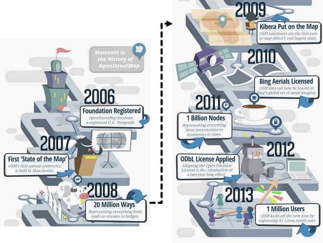
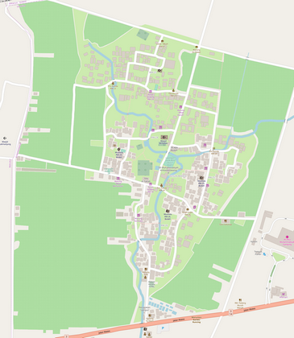
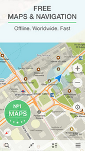
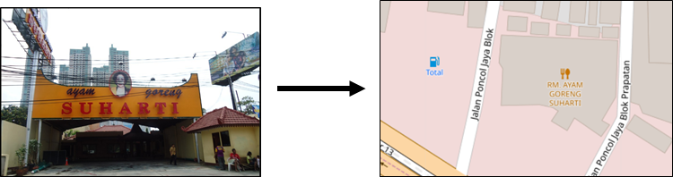
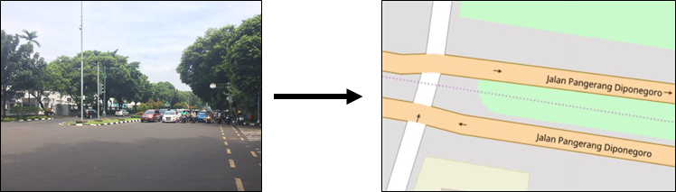
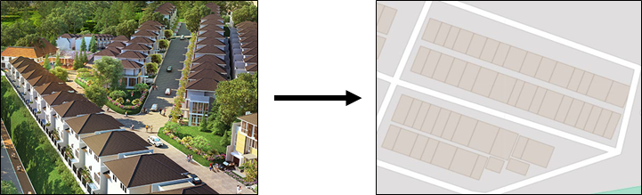

Introduction to OpenStreetMap
Download page as PDFObjectives:
- To be able to explain what OpenStreetMap is
- To be able to explain the history of OpenStreetMap
- To be able to explain the benefits of using OpenStreetMap
- To be able to explain the use of OpenStreetMap
- To be able to explain the basic concept of map and OpenStreetMap
Nowadays a lot of people use digital map, but only a few use open source digital map. Open source digital map is totally free and editable. One of open source digital maps is OpenStreetMap. In this module, you will learn all about OpenStreetMap.
I. What is OpenStreetMap?
OpenStreetMap or OSM is a free, open and editable digital map of the whole world. Since OpenStreetMap is a digital map, anyone can access it anywhere freely. OpenStreetMap data is licensed under ODbL, whereas the cartography of the map tiles is under CC-BY-SA. This enables its user to copy, distribute, transmit and adapt OpenStreetMap data, as long as credit given to OpenStreetMap and its contributors by citing “© OpenStreetMap contributors”. Sharing data is very useful especially for unreachable data. Using OpenStreetMap, you can share spatial data where the data created by other users and other users can also use the data you created. OpenStreetMap also enables its users to create a new product made from OpenStreetMap data and also enables users to modify the data.
OpenStreetMap Logo
II. OpenStreetMap History
OpenStreetMap is founded by Steve Coast in 2004. Steve initially focused on mapping UK since spatial data from Ordnance Survey is not distributed widely and freely. Then Steve and some other people founded OpenStreetMap so that all the people in the world could create a digital map for their communities and store it in a common database. In 2006, OpenStreetMap becomes a registered UK nonprofit organization. In 2007, OpenStreetMap’s first annual conference called “State of the Map” is held in Manchester. In 2008, 20 million ways representing everything from roads to streams to hedges were mapped in OpenStreetMap.
In 2009, OpenStreetMap volunteers put Kibera, the second largest slum in Africa, in OpenStreetMap. In 2010, Bing satellite imagery can be used for OpenStreetMap mapping reference. In 2011, one billion nodes representing everything from intersections to trees were mapped in OpenStreetMap. 2011 is also the year when OpenStreetMap was first introduced in Indonesia. In 2012, ODbL applied to OpenStreetMap which enables OpenStreetMap users to share or to adapt OpenStreetMap data. In 2013, OpenStreetMap users reached one million. Up until now, OpenStreetMap has more than five millions registered users around the globe.

OpenStreetMap History
III. Why OpenStreetMap?
The reasons why OpenStreetMap is the best choice:
- OpenStreetMap is free and open so you won’t be charged anything to use it. A lot of spatial data providers charge a great amount of money to obtain spatial data from them. OpenStreetMap can be your alternative free of charge source. With OpenStreetMap, you do not need to depend on government agency/institution or other spatial data providers to obtain spatial data.
- OpenStreetMap data is richer and more update. This is possible because every OpenStreetMap user can add, edit or delete OpenStreetMap data anywhere anytime. For example, there is a restaurant that is no longer exists, but it is still mapped on OpenStreetMap. You, as an OpenStreetMap user, can easily delete the restaurant mapped on OpenStreetMap since it is no longer exists. In some big cities, the OpenStreetMap data tends to be richer than remote small cities because there is no users mapping it. So, data availability and data update depend on OpenStreetMap users.
- OpenStreetMap comes in handy. OpenStreetMap provides a lot of tutorials for new users. OpenStreetMap’s user friendly interface makes mapping experience easy even for those who do not have geography/mapping background.
- OpenStreetMap map can be modified as needed. All OpenStreetMap data can be used and modified for your needs. For example, you want to make a tourist objects map in your area, you can download OpenStreetMap data and make a tourist objects map out of it.
IV. The Use of OpenStreetMap
There are so many examples of the use of OpenStreetMap. You can complete the information of the map and create a map of a familiar area. You can make a detailed map since every user is able to do survey individually on the targeted area. Here is one example of Bodeh Hamlet map in Yogyakarta made by one of OpenStreetMap users who lives there.

Map made in OpenStreetMap
OpenStreetMap data is also used by one of Android Developers to make an offline map and navigation mobile app called Maps.me. This app uses OpenStreetMap data which should be downloaded first then the OpenStreetMap data can be used offline for navigation.

Maps.me
OpenStreetMap can also be used to make a disaster-related map. OpenStreetMap is often used as tools to map disaster area then the data will be used for damage assessment. OpenStreetMap is often used mapping platform for disaster response since OpenStreetMap really suits for participatory mapping. OpenStreetMap data can be used for evacuation route planning as well as evacuation center, but OpenStreetMap data should be processed first using GIS software.
V. The Basic Concept of Map and OpenStreetMap
Paper Map Concept
Map is an effective tool to deliver information. Map can represent information better than words especially information regarding location. Answering several questions will be more effective by map visualization, such as “Where is elementary school 01 located?” or “Where is the nearest hospital?”. When this kind of questions come up, it is easier to answer it by drawing it in a piece of paper as a paper map. Roads usually drawn as lines and buildings usually drawn as a rectangle. However, different people may have different drawing style depends on who draws the map.
Why Digital Map?
Paper map is really hard to share since may be it is the only copy you have, or if there are more than one copy, other people may not be able to interpret what the creator means since not everyone has the same drawing sense. Paper map is also easily damaged by water and needs special storage so that the map is not damaged or lost. This is why map is better stored in a digital form so that people can easily access it. Using computer, map data can be easily understood, stored and shared. Digital map enables you to do map symbology as desired. Digital map makes adding unlimited information to the mapped objects possible. It’s different with paper map, you can only put a limited number of information since paper map has a very limited space. Most importantly, when mapping using computer, the mapped objects will have coordinates (latitude and longitude), locating precisely where the objects are on earth.
Digital Map Component
The objects that you map will be represented by point/node, line/way or polygon, depends on the object’s type. Point of interests such as restaurant, fire hydrant and bank are usually represented by point/node. Line/way is usually used to represent linear objects such as roads, river and railway. Line/way is actually an ordered list of nodes that connect to each other. Polygon is used to represent area such as building, lake or land use. Polygon is a closed way whose last node is also the first node.

Point symbology for point object on OpenStreetMap

Line symbology for line object on OpenStreetMap

Polygon symbology for polygon object on OpenStreetMap
SUMMARY
If you can comprehend and follow through all the explanation above, then you are able to explain what OpenStreetMap is, explain OpenStreetMap history and explain the benefits of using OpenStreetMap. You are also able to explain the use of OpenStreetMap and explain the basic concept of map and OpenStreetMap.